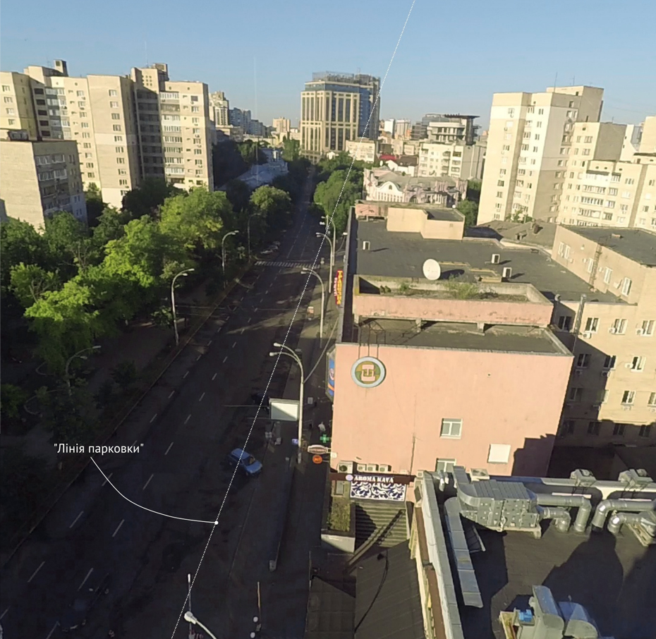

16 червня 2017 року, парковка на вул. Омеляновича-Павленка, 4 з 7:00 до 10:05 ранку (Що це на картинці?)
Збиткова справа: Що робити з парковками?
За 4 місяці цього року служба столичного паркування отримала 7,4 млн грн доходу, витративши на утримання мережі паркувальників 7,8 млн грн. Ми поставили камери, щоб зрозуміти, скільки коштів можна збирати насправді.
Над проектом працювали: Олександр Оксимець, Влад Герасименко, Євгенія Дроздова, Надя Кельм, Анатолій Бондаренко, Марія Клокова
Опубліковано: 10 серпня 2017 року
Збиткова справа: Що робити з парковками?
За 4 місяці цього року служба столичного паркування отримала 7,4 млн грн доходу, витративши на утримання мережі паркувальників 7,8 млн грн. Ми поставили камери, щоб зрозуміти, скільки коштів можна збирати насправді.
Над проектом працювали: Олександр Оксимець, Влад Герасименко, Євгенія Дроздова, Надя Кельм, Анатолій Бондаренко, Марія Клокова
Парковки — це готівка. Скільки дядько в жилетці комунального підприємства «Київтранспарксервіс» припаркує на вулиці автомобілів, скільки візьме грошей, проконтролювати практично неможливо. Та ті суми, які декларує зараз підприємство, смішні. Наприклад, у липні 2017 року, за даними інформаційної системи «Майно», найбільше грошей зібрали 5-го числа — аж 53 тисячі гривень. За даними київських активістів із Реанімаційного пакету реформ, у місті 6689 паркомісць. Тобто в цей грошовий день одне паркомісце принесло Києву 7 гривень 90 копійок.
Ми поставили відеокамери над трьома парковками і порахували, скільки автомобілів реально паркується протягом трьох днів, та порівняли з офіційними даними щодо грошей, які приносять місту ці парковки. Офіційно київські парковки працюють з 9:00 до 18:00, тож ми рахували тільки цей проміжок.
Перший пункт спостереження — парковка біля торгового центру «Gulliver» на вулиці Басейній — офіційно вона принесла 243 грн за день (це середнє за три дні), тоді як ми нарахували що машини насправді напаркувалися на 1400 грн.
Басейна, 12
(24 травня 2017)
300 грн
Офіційно зібрано (з 9:00 до 18:00)
1398 грн
Можна було зібрати
2032 грн
Можна зібрати якщо розширити час роботи (з 7:00 до 23:00)
Друга парковка — на вулиці Омеляновича-Павленка (колишня Суворова), поблизу Київміськбуду. Офіційно принесла в середньому 398 гривень за день, за нашими підрахунками з відео — близько 1100.
Ми рахували, скільки стояв кожен автомобіль і множили час на офіційні розцінки, при цьому ми не брали до уваги машини, які стояли менше ніж 15 хвилин.
Закликаємо вас не вірити нам на слово, а подивитися на інтерактивних візуалізаціях, скільки насправді машин стояло на кожній з парковок.
Омеляновича-Павленка, 4
(14 червня 2017)
412 грн
Офіційно зібрано (з 9:00 до 18:00)
1209 грн
Можна було зібрати
1917 грн
Можна зібрати якщо розширити час роботи (з 7:00 до 23:00)
Третя — між площею Льва Толстого і станцією метро «Олімпійська». Офіційно — 42 гривні в середньому за день, але за нашими підрахунками — близько 1100 гривень.
Велика Васильківська, 58-50/23
(5 липня 2017)
90 грн
Офіційно зібрано (з 9:00 до 18:00)
1118 грн
Можна було зібрати
1524 грн
Можна зібрати якщо розширити час роботи (з 7:00 до 23:00)
Тепер, коли ми знаємо, скільки грошей, м’яко кажучи, не добирає міський бюджет, читачу може здатися, що перед ним чергова стаття проти паркувальників. Навіть у мерії цілком серйозно розглядається варіант, що парковки — як збиткову справу — потрібно зробити безкоштовними, а роботу для паркувальників скасувати.
Те, що відсьогодні, 10 серпня, мерія запровадила безготівковий розрахунок, означає приблизно те саме, але у прихованому варіанті — парковки де-факто стають безкоштовними. Принаймні вони стають більш дешевими, тому що за чинним законодавством змусити водіїв платити безнал ще важче, ніж готівку. До того ж, це знищить армію паркувальників. Але не поспішайте радіти: вони хоч і корумповані, однак відіграють корисну роль «санітарів лісу» — зменшують кількість машин у центрі.
Насправді, наша пропозиція протилежна — ми за те, щоб парковки в центрі міста стали більш дорогими. Ця платня повинна збиратися з усіх, корупцію у паркуванні необхідно зменшити (за нашими грубими оцінками бюджет міста може отримати за рік щонайменше на 100 млн гривень більше, ніж це було в 2016-му, навіть при поточних цінах)
Безкоштовні парковки — це катастрофа для міста.
Безкоштовні парковки - це біда, але навіть дешеві — такі як у Києві — приводять до великих проблем.
Що більше дешевих парковок або безкоштовного паркування під кожним деревом у центрі міста, то більше машин. Це призводить щонайменше до трьох різко негативних для його розвитку речей: корків на дорогах, збільшення шкідливих викидів, та дискримінації пішоходів.
Перші дві проблеми зрозумілі, але у чому проблема з пішоходами?
Яке місто є гарним? Те, де люди люблять виходити з будинків. Не в супермаркети, а на вулиці, площі, кафе". Якщо машини важливіші ніж люди — як у Києві, коли навіть діти постійно гинуть під їх колесами — таке місто ніколи не матиме розвитку, таке місто ніколи не стане успішним.
Сучасна теорія містобудування говорить: хочете знищити хороше місто, або принаймні надію на таке місто — зробіть його для машин, а не для людей. Місто для машин — це тенденція країн третього світу, місто для людей — найбільш успішні міста Європи та Америки. У Хараре, Пекіні або Києві по тротуарах важко ходити, вони захаращені автівками, натомість Чикаго або Відень мають зручний громадський транспорт, велику кількість пішохідних зон та сотні кілометрів доріжок для велосипедів.
Саме тому, просунуті міста або радикально збільшують ціну паркування (Токіо), або не менш радикально зменшують кількість місць для парковки (Осло, Париж та Барселона) — як підготовку до повної заборони автомобілів у центрі міст.
Скільки у такому випадку має коштувати парковка в центрі? Щонайменше стільки, скільки в середньому коштує дві поїздки на таксі — тобто близько 200—300 гривень на день. За такої ціни, суттєва частина водіїв задумаються про необхідність переходу на громадський транспорт / таксі. Якщо вдасться різними методами зменшити кількість машин, а місто проводитиме притомну політику по розвитку громадського транспорту, Київ стане набагато більш привабливим для життя, від чого виграють всі його мешканці — і ті що з машинами, і ті що без.
Як активісти намагаються реформувати київські парковки читайте тут
Методологія
Ми записали на відео роботу трьох парковок у центрі міста з 07:00 до 23:00, причому кожну записували по три дні. По відео ми порахували, скільки стояв кожен автомобіль, і множили час на тариф, що діє в цій зоні.
Ми не враховували машини, які стояли менше, ніж 15 хвилин. У цьому нам допомогла візуалізація «спресована парковка». Отримані дані ми порівняли з цифрами з інформаційно-аналітичної системи «Майно».
Як ми створили зображення «спресована парковка»
На картинці ми показали кадр із відео для одної з парковок. Колір кожної точки, яка лежить на «лінії парковки» (власне ця лінія, що перетинає всю зону парковки, показана білим), ми перетворили на вертикальні колонки точок-пікселів, з яких складається зображення «спресованої парковки». Ми брали кожен п'ятий кадр відео і витягали з нього програмним способом згадану вище колонку пікселів.

Лінія парковки на вулиці Омеляновича-Павленка, 4
Якщо зробити це для всього відео і додавати колонку за колонкою зліва направо, то вийде зображення, яке ми назвали «спресована парковка» (насправді вона спресована до одної лінії у просторі, однак розтягнута в часі). Як читати це зображення, що насправді є «зліпком» із відео довжиною в 16 годин, видно на інструкції з картинки нижче. Серед іншого, ви можете швидко оцінити загальну завантаженість парковки за день або точно підрахувати, скільки машин стояло менше, ніж мінімальний безкоштовний проміжок часу (15 хвилин), щоб їх не враховувати.